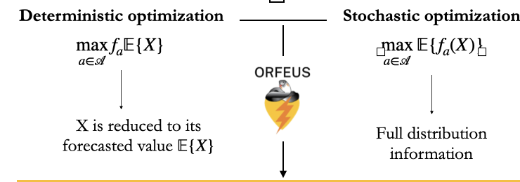
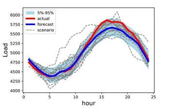
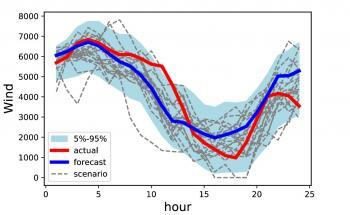
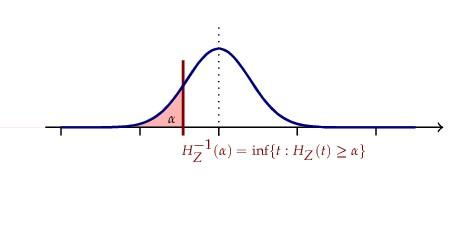

Operational Risk Financialization of Electricity Under Stochasticity
ORFEUS is a research team at Princeton University headed by Professors René Carmona and Ronnie Sircar that studies and quantifies supply, demand and price uncertainties in modern electricity grids. It was started in 2020 under an ARPA-E award, and currently collaborates with state, federal, academic and industry partners.
Quantifying intermittency risk
Modern power grids that incorporate renewable sources alongside traditional thermal generators face the risks of intermittency, which are inherently stochastic. Renewable energy such as solar and wind depend on exogenous factors, especially the weather, making it challenging to forecast renewables' power production ahead of time.
ORFEUS Approach
Let be random intermittent production, be decision variables that include power flow and other constraints, and represent cost. ORFEUS replaces deterministic optimization based on forecast values with stochastic optimization that uses full distributional information.

PGScen (opens in new tab) This package generates power grid scenarios using GEMINI trained on historical grid asset actual and forecasted values.
Vatic (opens in new tab) is a Python package for running simulations of a power grid using the PJM framework consisting of alternating day-ahead unit commitment (UC) and real-time economic dispatch (ED) steps.
A Stochastic Model Capturing Correlations
Renewable energy resources reduce carbon footprint and marginal cost, but also introduce risk to the grid that is not fully accounted for under current operational paradigms. The fulcrum of the ORFEUS platform is a set of asset-specific modules which calibrate stochastic models of the joint behavior of forecasted and actual production, tailored to wind, solar and load. Models are linked through a high-dimensional correlation constructor which renders spatial and temporal correlation structure tractable via LASSO-based methods and parametric representations of locational correlation structure (Gaussian Random Fields). The last figure shows examples of graphical LASSO correlation effects for NYISO and ERCOT zonal load forecast errors.



Financial Risk Measures Reliability Indices
Zero-marginal-cost assets are usually guaranteed to be committed even if they create potentially costly externalities due to uncertain production. The ORFEUS risk-based cost module rigorously decomposes the results of the simulation batch into reliability costs by asset and zone using coherent risk measure methodologies ensuring that system operations allocate realized costs equitably.

Texas 2030 grid
A system-level view of how ORFEUS tracks risk allocation across a future grid with high renewable penetration.

Commercial Applications
ORFEUS helps asset owners, grid planners, and market participants make better decisions in uncertain power markets. Using stochastic modeling of renewable output, demand, transmission conditions, and nodal prices, ORFEUS supports storage optimization, risk-based bidding, reliability planning, and emissions-aware market strategy.
Storage Optimization
Batteries must decide when to charge, when to discharge, and how to balance energy, ancillary services, and capacity value under uncertain prices and system conditions. ORFEUS provides probabilistic nodal price forecasts and risk-aware optimization that can improve bidding, increase revenues, and support more reliable dispatch.
Risk-Based Bidding for Asset Owners
ORFEUS can support more informed bidding and revenue management for asset owners across wholesale power markets. Its stochastic framework produces asset-level risk measures together with distributions of locational marginal prices, giving market participants a stronger basis for day-ahead and real-time strategy than deterministic forecasts alone.
Grid Planning and Operations
As renewable penetration increases, grid operators and planners need tools that better capture uncertainty, correlation, and transmission constraints. ORFEUS has potential applications in dynamic reserve setting, storage monitoring, reliability planning, and integrated generation-transmission analysis.
Emissions-Aware Optimization
ORFEUS can also optimize for environmental performance by estimating locational marginal emission rates alongside locational prices. This creates opportunities for batteries, large power consumers, and sustainability-focused organizations to reduce carbon impact while still accounting for economic value.